Football Stadium Maksimir
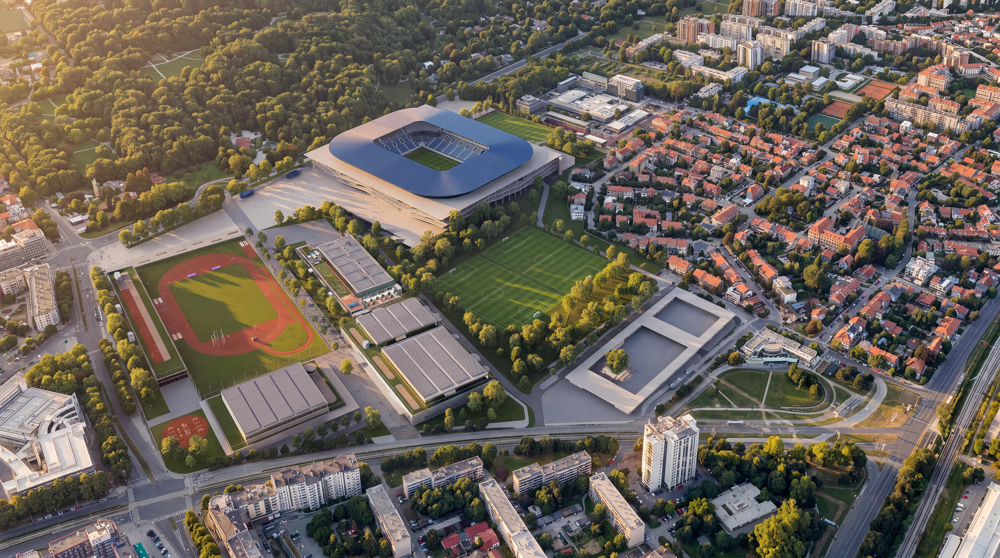
About the Project
Role: Architectural Designer
Company: NORMOTIC FZE
Project: Football Stadium Maksimir
Competition: International Competition · 2026
Architectural competition for the conceptual design of the Football Stadium Maksimir.
Concept
The concept transforms the Svetice Sports Centre into a multifunctional sports and public-space hub that integrates new facilities with the existing urban and landscape structure of Zagreb. A new central Svetice Promenade forms the main public spine, connecting sports venues, Maksimir Park, public transport, parking, and pedestrian and cycling networks, while clearly separating pedestrian and service circulation.
The architectural composition creates a coherent ensemble of sports facilities supported by green infrastructure, public spaces, and ecological landscape strategies. Sustainability is embedded through efficient planning, renewable energy systems, district heating, and environmentally responsible solutions, ensuring long-term environmental and operational performance.
The Maksimir Football Complex is conceived as an open and transparent stadium that establishes a strong visual and spatial relationship with the city and the surrounding landscape of Maksimir Park. The design challenges the conventional idea of an enclosed iconic stadium by exposing its structural framework as the building's “bones.” A lightweight reinforced-concrete grid supports the functional programs beneath the stands while allowing the spectator bowl to remain visually dominant. Conceived as an autonomous meta-object, the seating bowl emerges from the structural framework, creating a distinctive architectural identity while maintaining openness, transparency, and visual connections with the surrounding green park. The concept combines structural clarity, architectural expression, and contextual integration, positioning the stadium as a natural extension of Maksimir rather than an isolated urban object, seamlessly connecting architecture and landscape.
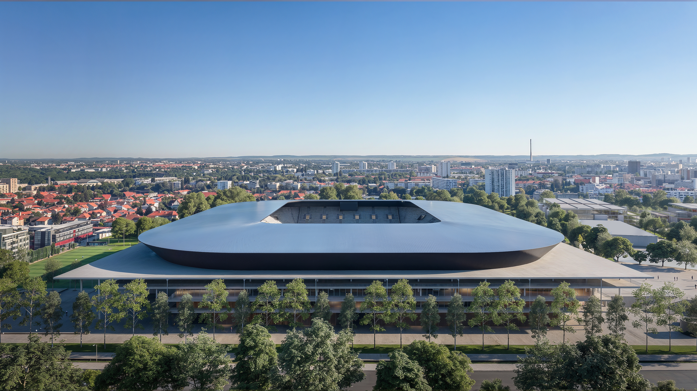
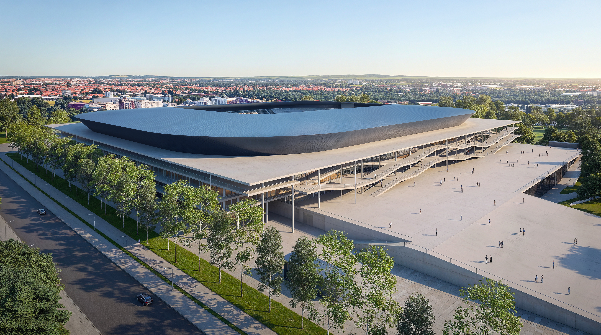
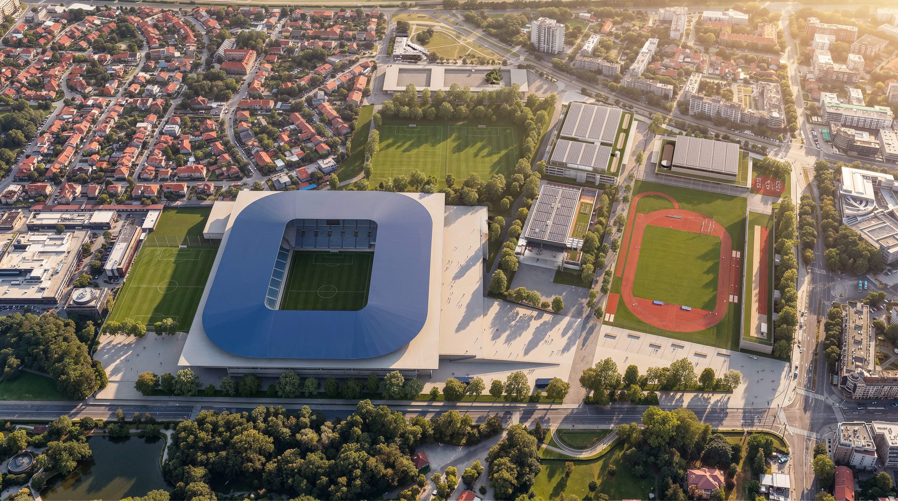
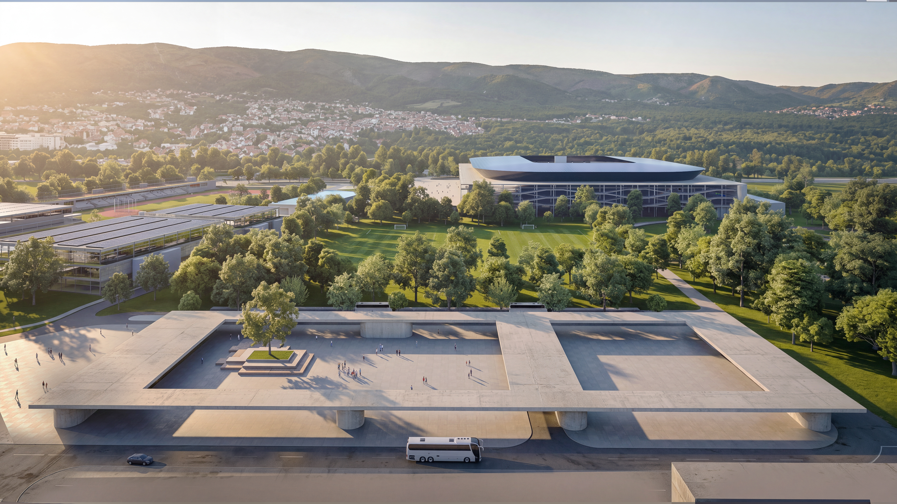
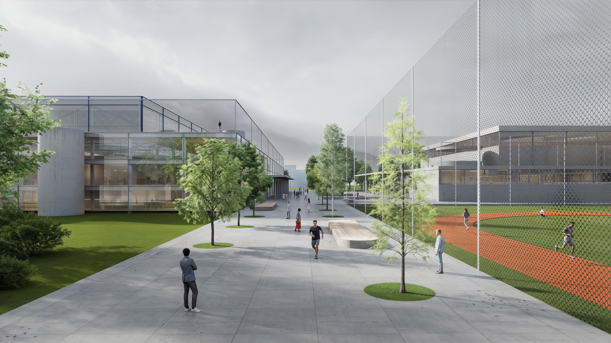
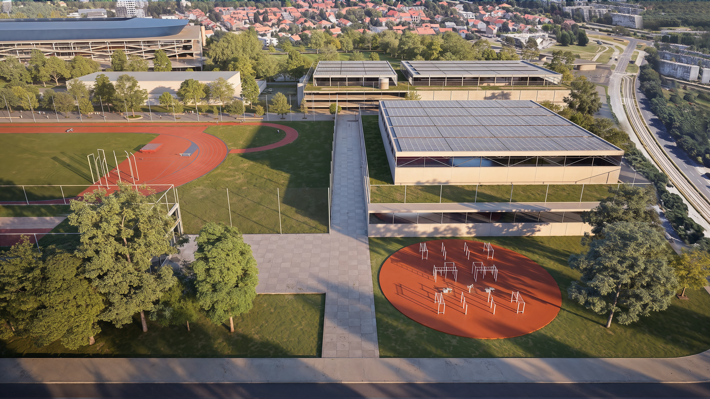
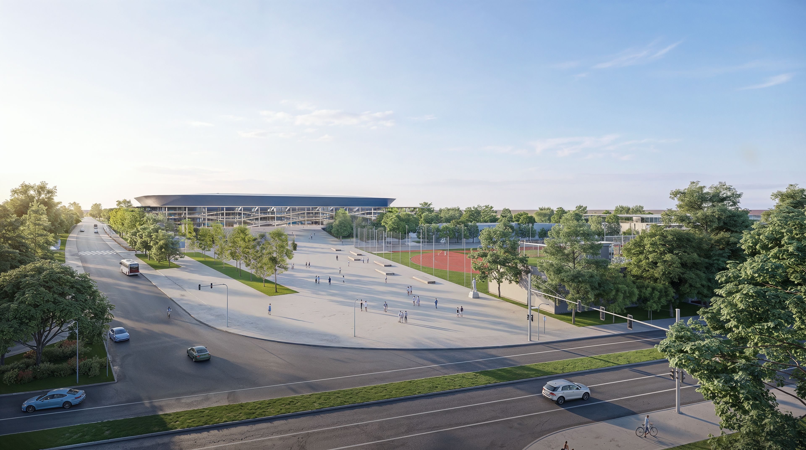
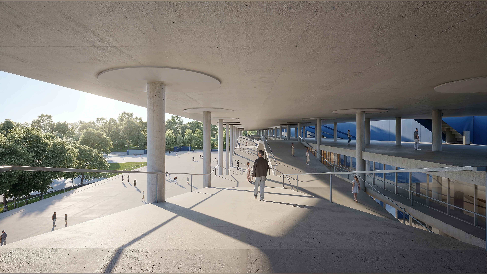
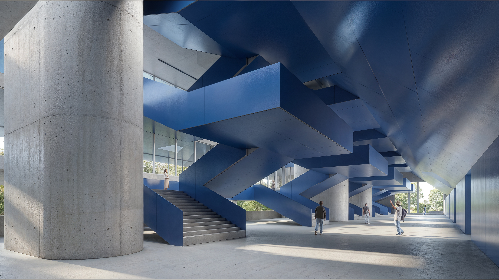
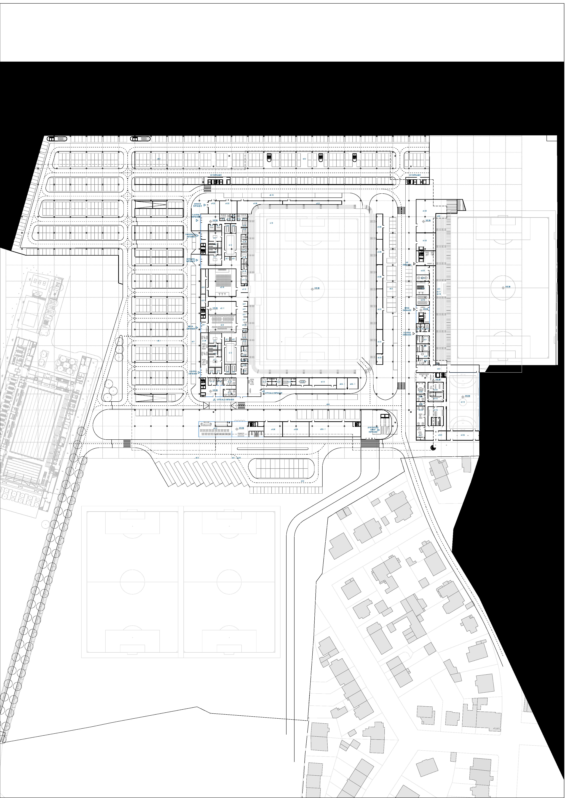
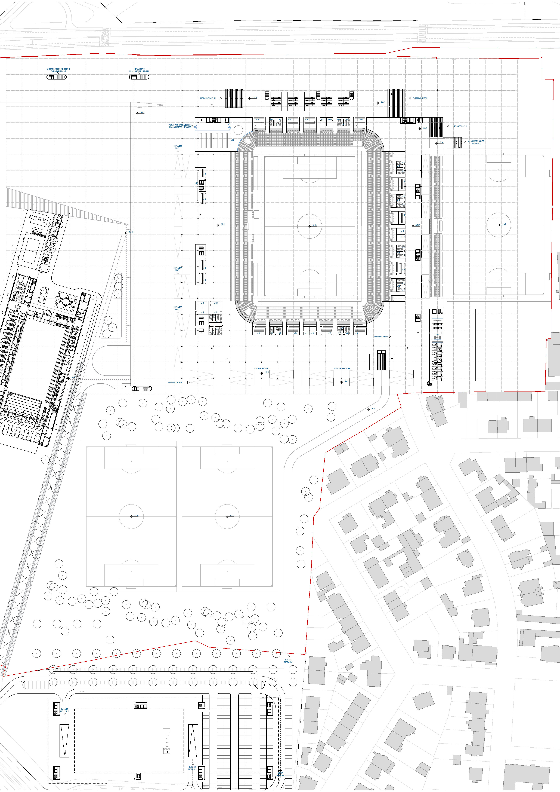
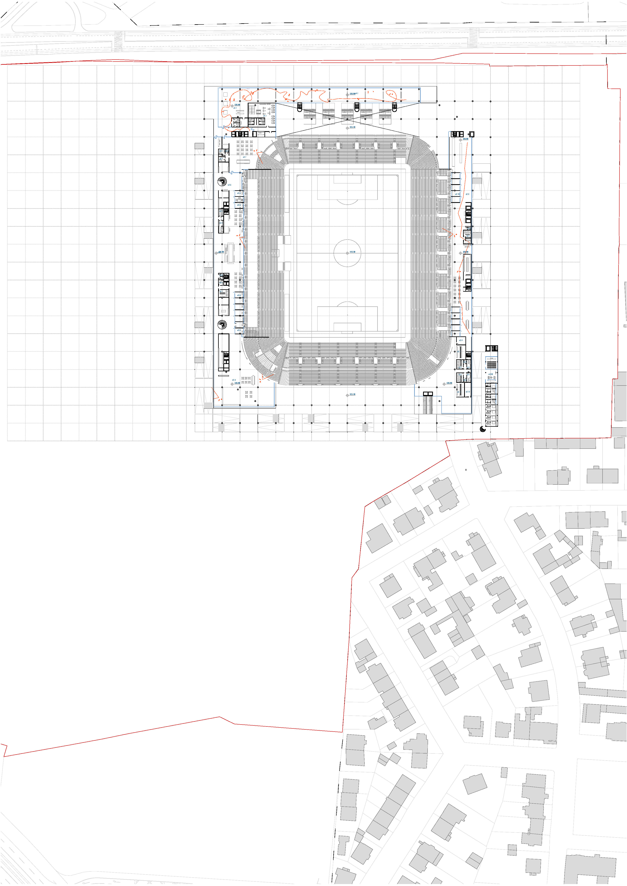
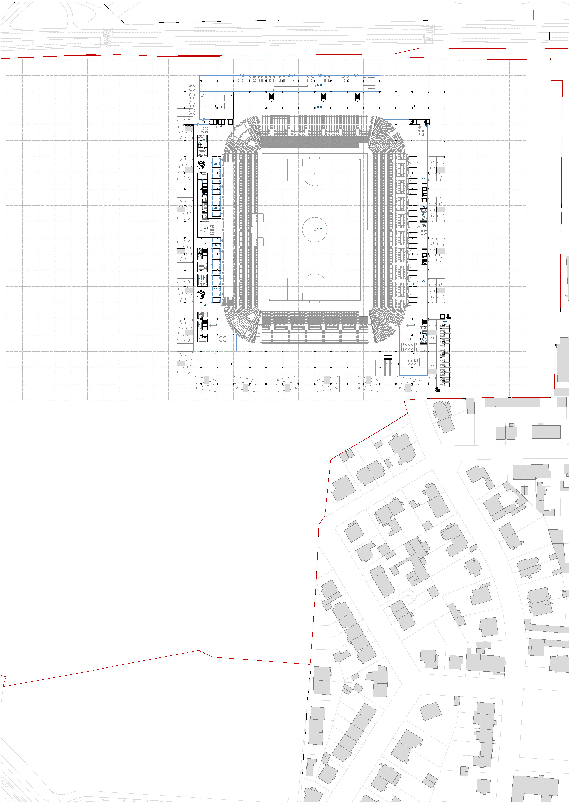
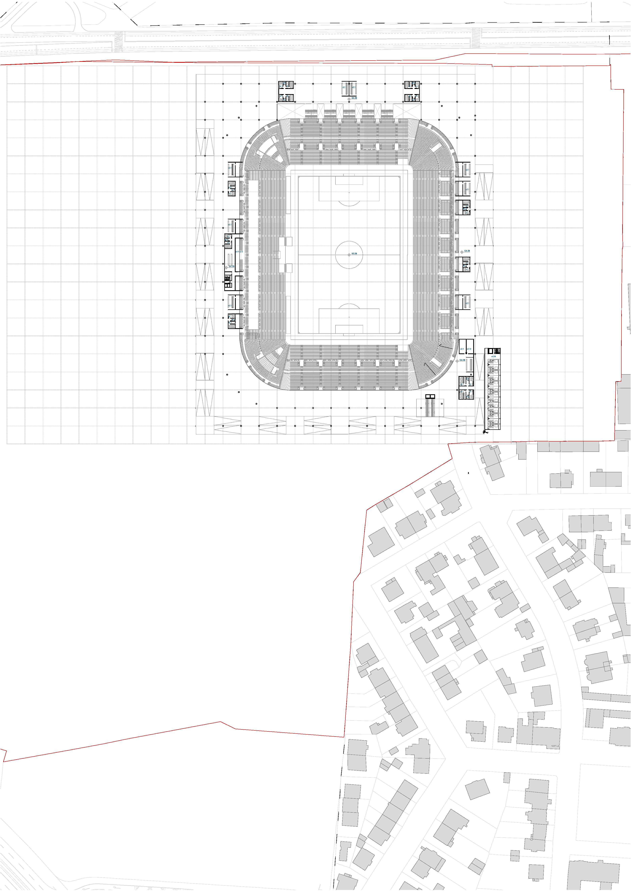
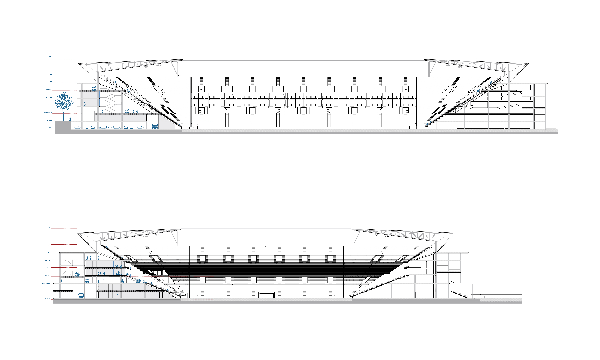